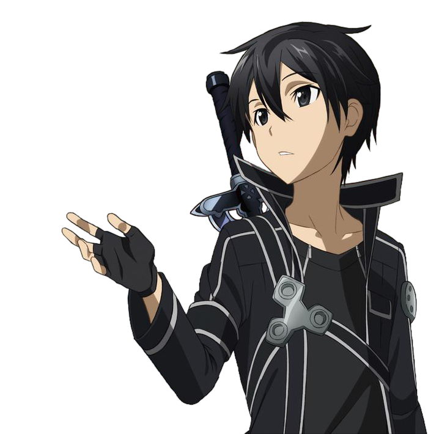

Kirigaya Kazuto (桐ヶ谷 和人)
This page description about Kirigaya Kazuto a.k.a Kirito from Sword Art Online. Kirigaya Kazuto (桐ヶ谷 和人) is a fictional character and the protagonist of the Sword Art Online series of light novels written by Reki Kawahara. He is more commonly known by his portmanteau, Kirito (キリト), his player name in the eponymous video game which the novels are partially set in. Kirito is a player of the VRMMORPG "Sword Art Online". He is a solo player who had the ability to play for ten hours straight due to his previous experience with games. He was one of the 10,000 players who were trapped in Sword Art Online, where he remained until he cleared the game. He is portrayed as a teenager who was formerly a beta tester for the titular game, and is known for being one of the game's best players. He is usually depicted wearing a black longcoat with a blue outline.
Appears in:
Sword Art Online 1, Sword Art Online 2, Sword Art Online : Ordinal Scale, Sword Art Online 3, Sword Art Online: Progressive - Aria Of Starless Night